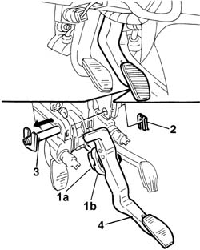

3330B22 brake pedal - r+r manual gearbox versions
- Path
- Procedures > 33 BRAKES > 3330 HYDRAULIC BRAKE SYSTEM > 3330B pedal unit > 3330B22 brake pedal - r+r manual gearbox versions
- Kind
- repair procedure (removal / refitting; the operation number is the code)
- Applies to
- all engines; all production periods
- Interactive page
- https://sloeber94.github.io/elrnDB-fDbl/en/#/2584648
Applies to: all engines; all production periods
 Removing
Removing
 Refitting
RefittingOp. 5550D10 BRAKE LIGHT SWITCH - R+R.
1. Disconnect the brake servo rod from the brake pedal; press on the side tabs of retaining device (1a), move back retaining ring (1b) and withdraw the rod from the pedal.
2. Remove the clip (brake pedal end) retaining the brake and clutch pedal mount pin.
3. Partially withdraw the pedal retaining pin.
4. Remove the brake pedal.

Applies to: all engines; all production periods
Refitting
RemovingPosition the brake pedal.
Insert the pedal retaining pin and secure with the retaining clip.
Press fit the brake servo rod to the brake pedal using the retaining device.